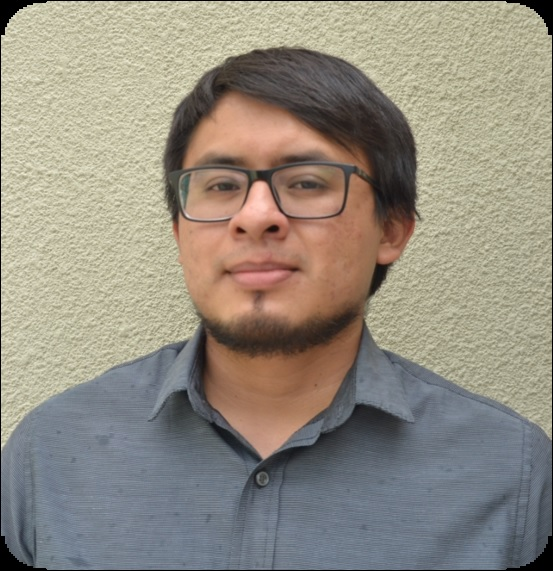

Luis Valencia
Electronic Engineer and Web Developer

Summary
Strategic planner with excellent analysis skills.
Enthusiastic about learning new stuff.
Able to find solutions as practical as creative
Education
- UNAM FES Cuautitlan
Telecommunications, Systems and Electronics Engineering.
Work Experience
- Service Desk ○ On-site Technical Support Coordinator ○ Grupo Siayec
November 2022 - january 2024
- In charge of the coordnation and support evens in the monitoring room of the Nation's Supreme Court
- Verification of the correct operation of the equipment
- Solving on-site issues adn in charge of documenting and reporting all service events
- IT Department ○ Support Engineer ○ Construmac
August 2018 - November 2022
- Preventive and Corrective Maintenance of computers and cellphones.
- Verification of the correct operation of the equipment.
- Electronic equipment repair. Attention to network issues.
Skills
- Electronic equipment troubleshooting
- Basic Network configurations
- Python and R programming
- ITIL Certified (2026)
- English (Fluent)
- German (Basic)